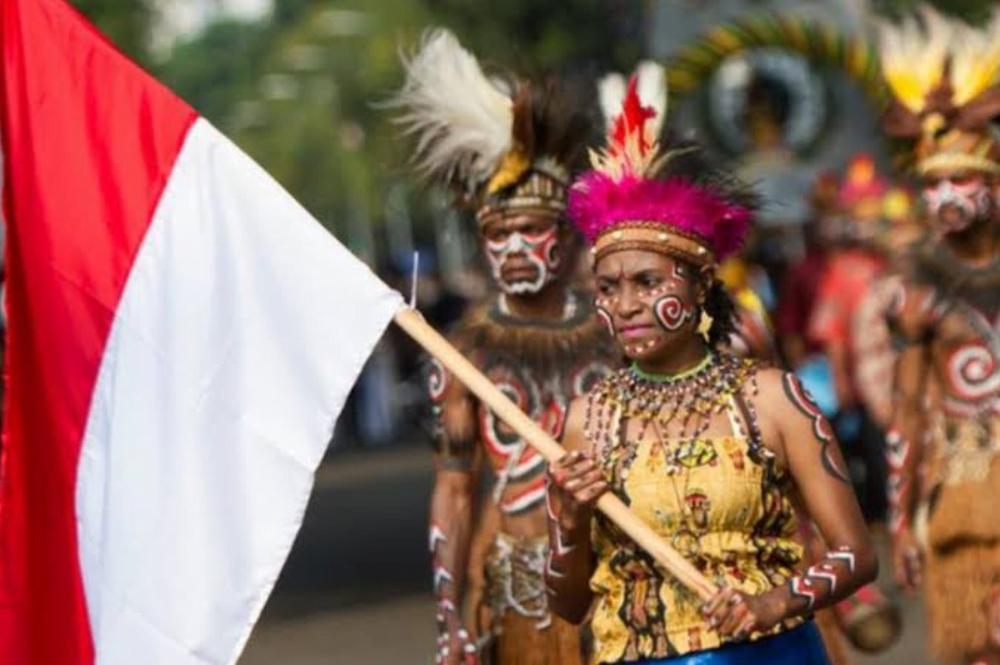
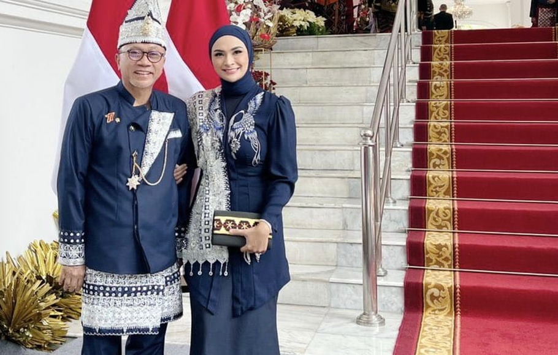
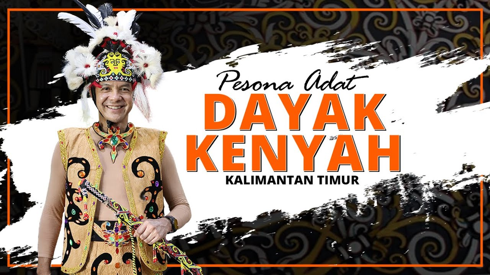
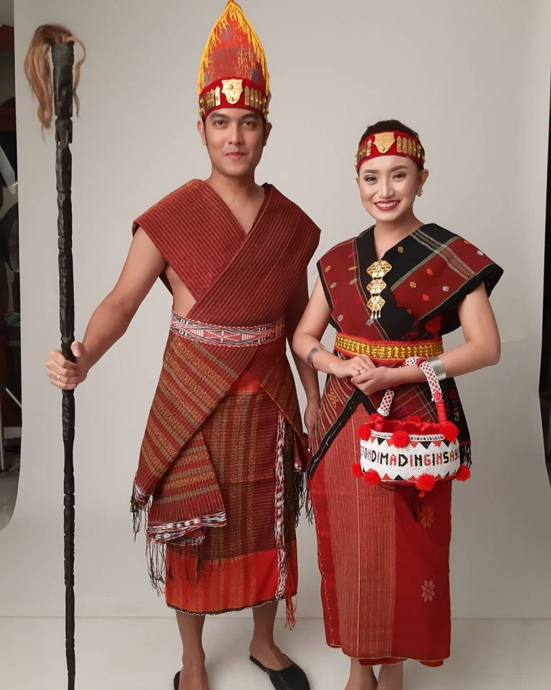

Baju Adat
Baju Adat Papua
Pakaian Sali adalah pakaian adat Papua yang hanya dikenakan oleh para gadis, sementara wanita yang telah menikah tidak diperkenankan menggunakan pakaian adat ini. Bahan pembuat Baju Sali adalah daun sagu atau kulit pohon pilihan yang berwarna coklat untuk menghasilkan warna sempurna. Banyak yang menyebut Baju Sali sekilas mirip dengan kain yang dijahit. Baju Sali digunakan untuk melakukan kegiatan sehari-hari dengan cara dililitkan di tubuh, dengan bagian dalam lebih panjang daripada bagian luar.
Baju Adat Lampung
Keunikan pakaian adat Lampung ini yaitu bahannya terbuat dari kain beludru dengan motif floral bunga tabur, salur, atau pucuk rebung. Pengantin pria mengenakan kain berbahan beludru dan bagian kepala memakai kopiah tungkus..
Baju Adat Riau

Baju kurung labuh adalah baju kurung khas Riau yang dipakai kaum perempuan Melayu, memiliki arti mengurung yang memakainya, baik mengurung dalam Adat juga dalam Syariat, baju kurung ini biasanya dipakai pada upacara adat, acara resmi, juga pakaian harian..
Baju Adat Kalimantan
Baju adat Miskat adalah pakaian tradisional Kalimantan Timur yang dulunya menjadi pakaian resmi Sultan Banjar. Model baju Miskat tampak seperti baju cina jaman dahulu. Baju Miskat untuk kaum pria berupa baju lengan panjang dengan kancing yang miring ke bagian kanan..
Baju Adat Batam
Pakaian tradisional Kepulauan Riau sering ditemukan pada ragam pakaian tradisional kebaya labuh dan teluk belanga yang menjadi pakaian tradisi Kepulauan Riau saat ini. Indonesia memang terkenal akan keberagaman budaya dan kemegahannya, seperti megahnya Rumah Ekslusif dari Pinhome contohnya Alora Springhil dan Daun Village. Nama pakaian Adat Kepulauan Riau adalah Kebaya Labuh dan teluk belanga. Namun, sebenarnya bukan hanya itu, masih banyak jenis pakaian tradisional di provinsi tersebut, hanya saja, dikalangan nasional kedua pakaian itulah yang menjadi ikon wilayah ini. Di Kep. Riau terdapat baju kurung keke, baju gunting cina, baju telepuk, dan lain-lain..